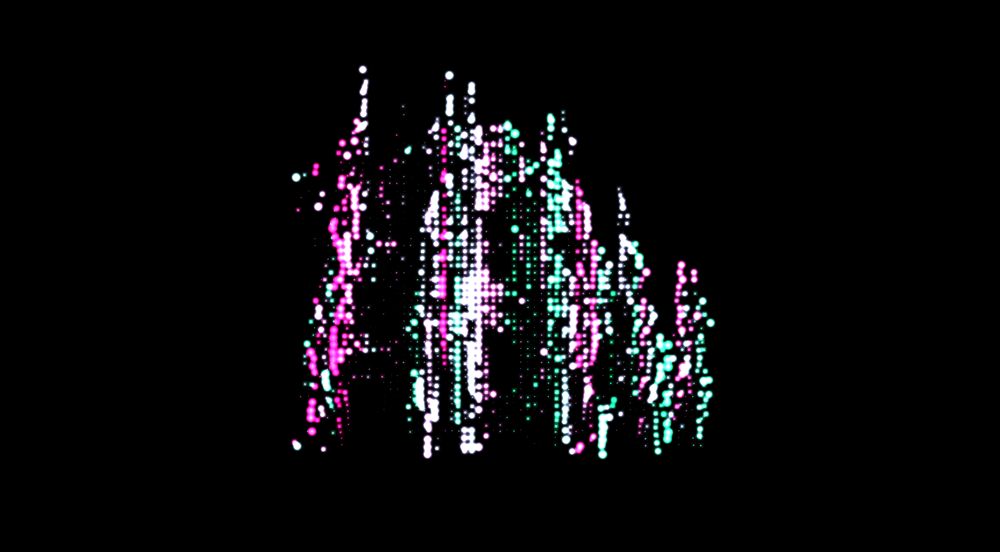

Mick Willemsen
Emerging Artists 2026

Cathedrals
Generative Art, 2022

Cathedrals was my first exploration into generative art, inspired by a fascination with gothic architecture and the often dystopian visions of the future. The project reinterprets historical architectural forms through a neon coated system, constantly rebuilding the intricate structures of cathedrals into a hologram-like aesthetic.

Using imagery of churches from around the world, the system reconstructs them at different levels of fidelity as it keeps working to keep their shapes as close to the original as possible. Occasionally it will stamp them around the screen which can result in the system dreaming up fictional neon skylines.